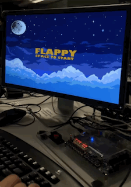
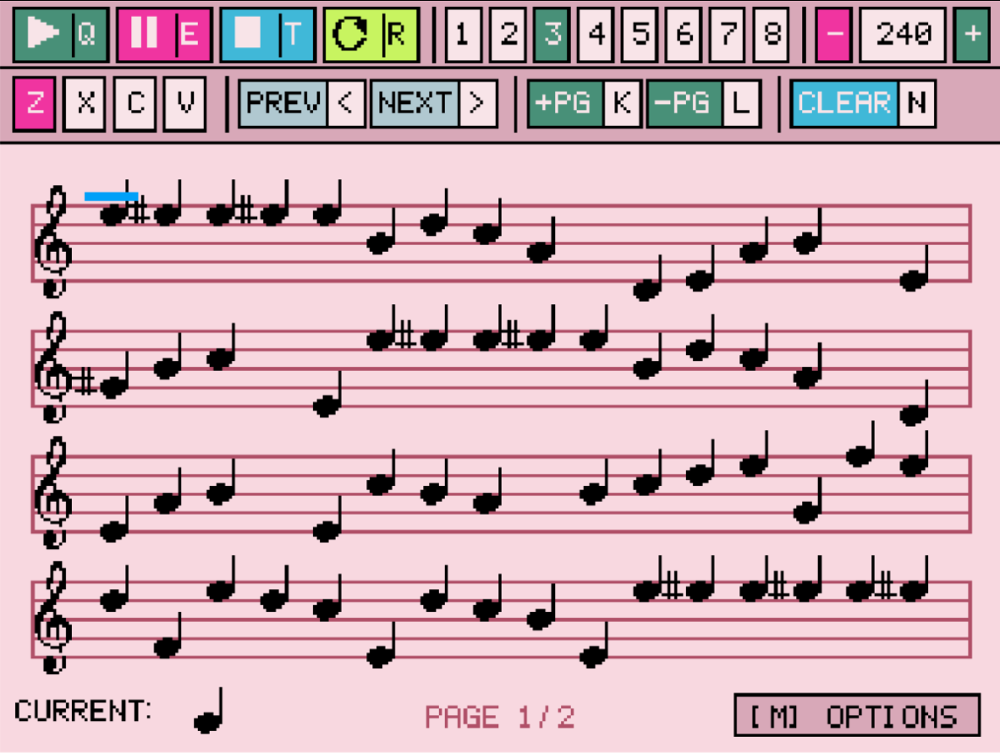

📁
↗
Scalable GIS Routing Engine
Built a high-performance geographic mapping application in C++, using parallel threads to route data across 100,000+ intersection nodes. Dropped pathfinding execution times to sub-second latency by replacing Dijkstra's with the A* algorithm, and updated the EZGL front-end with dynamic sidebar controls for real-time route instructions.
C++
Parallel Systems
Data Processing

📁
↗
Bare-Metal FPGA Game Engine
Architected a fully deterministic, zero-latency game engine in Verilog on an Altera DE1-SoC FPGA, operating entirely without a CPU or operating system. Engineered a multi-module FSM to handle collision detection and 640x480 VGA sprite rendering across a 50MHz clock domain, with bare-metal PS/2 drivers and custom LFSR-based RNG for the hex displays.
Verilog
Hardware Architecture
ModelSim

📁
↗
Embedded VGA Music Sequencer
Programmed a real-time digital synthesizer with zero-jitter audio playback by driving an 8kHz polling loop through memory-mapped I/O. Managed multi-page sheet music state with an optimized flat C struct for O(1) array deletion, and generated interactive square-wave audio using 16-bit PCM arrays and fixed-point phase accumulators.
C
Embedded Systems
Real-Time Processing
📁
↗
Interactive Developer Portfolio
Built this fully responsive personal portfolio from scratch using vanilla JavaScript, CSS, and GSAP for scroll-driven animations, including a custom animated PowerShell-style terminal widget with a live command-line interface. Deployment is automated via GitHub Actions directly to GitHub Pages.
JavaScript
CSS
GSAP
📁
↗
Surgical Biomodel Design (ESP II)
Collaborated with Sunnybrook Hospital surgeons to architect and prototype a bilaminar skin flap biomodel for facial reconstruction training. Validated the biomodel's anatomical realism and mechanical behavior through rigorous physical tensile testing, and delivered a comprehensive technical report on final design specifications and material cost-efficiency.
Prototyping
Materials Testing
Client Management
📁
↗
Bahen Courtyard Optimization (ESP I)
Translated ambiguous client problem statements into strict, measurable engineering requirements to optimize the spatial flow and functionality of a university courtyard. Iterated on conceptual designs using engineering matrices to quantitatively balance environmental, societal, and human factors.
Systems Design
Requirements Gathering